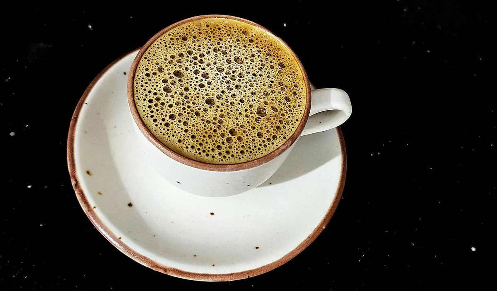
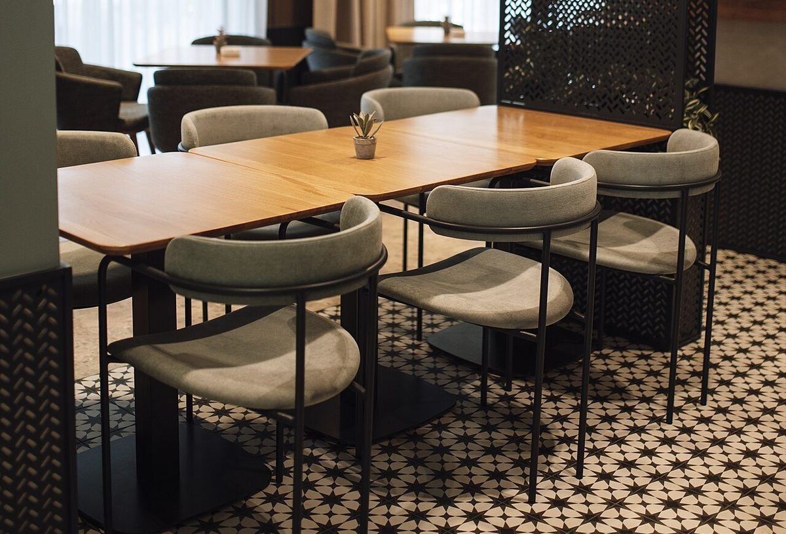

カフェ / 茨城県古河市坂間
MADEI
madei cafe
CAFE
茨城県古河市坂間にあるカフェ「madei cafe」のご案内ページです。営業時間やメニューなど、詳しいことは準備中。まずはInstagramをのぞいてみてください。
制作側の連想
店名のつづりを、六つの点に置き換えてみた。
店名の由来は分かりません。制作側は「madei」というつづりから、アルファベットを六つの点の組み合わせで表す「点字」を連想しました。縦3つ・横2つの点のうち、どこが盛り上がるかで一文字が決まるしくみです。このサイトは、その決まりを写真の並べ方に借りています。制作側の連想で、お店の理念・由来とは無関係です。
読み方
点には番号がある。
左の列が上から1・2・3、右の列が上から4・5・6。
- M点 1・3・4
- A点 1
- D点 1・4・5
- E点 1・5
- I点 2・4
橙色の点が「盛り上がっている点」、輪郭だけの点が「平らな点」です。
d の点配置(1・4・5)
盛り上がった三つの点に、写真を置く。
1 5
5 6
6

23456
「d」は1・4・5の点が盛り上がる文字です。ここでは、その三つの位置にだけ写真(イメージ)を置きました。残りの三つは平らなまま、余白です。
- 1コーヒーカップ(イメージ)
- 4クロワッサン(イメージ)
- 5陶器の器(イメージ)
写真は古河市の風景でも、このお店の写真でもありません。国外・撮影地不明のフリー素材です。
平らな点のぶんだけ
余白も、ひとつの点。


二枚ともイメージです。実際のお店の様子や提供内容を示すものではありません。
ご案内
お店のこと(確認できたものだけ)
| 所在地 | 〒306-0056 茨城県古河市坂間212-3 |
|---|---|
| 電話 | 0280-48-3053 |
| 営業時間 | 準備中 |
| 定休日 | 準備中 |
| ご予約 | 準備中 |
| 駐車場 | 準備中 |
| SNS | Instagram @madei_cafe |